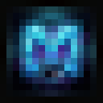

Vanilla ve Forge
Sürüm ve yükleyici profillerini ayrı ayrı düzenle.

MISTIKLAUNCHER ULTRAVanilla ve Forge profillerini seç, ayarlarını yap, oyuna geç. Mistik Launcher Ultra Windows için ücretsiz.
Oyun profillerini, modlarını ve temel ayarlarını tek launcher içinden yönet.
Sürüm ve yükleyici profillerini ayrı ayrı düzenle.
Modlarını ve oyun kaynaklarını launcher'dan kontrol et.
Minecraft'a ayrılan belleği 1–32 GB arasında belirle.
Otomatik güncelleme, kurulum geri alma ve hata raporlama.
Launcher'ı tercih ettiğin dilde kullan.
Ana sayfayı, sürümleri, modları ve ayarları etkileşimli görsel demoda incele.
Son profilini seç ve kaldığın yerden devam et.
Profillerini ve oyun kurulumlarını buradan düzenle.
Seçili profildeki modları görüntüle.
Launcher'ı sistemine ve oyununa göre düzenle.
Kurulum tipini seç. Dosyalar GitHub'daki resmî proje sürümünden indirilir.
Kurulum sihirbazını indirip çalıştır.
Doğrudan indirÇevrimdışı kurulum paketi.
Doğrudan indirKurulum gerektirmeyen ZIP paketi.
Doğrudan indirBu sürüm Minecraft başlatma güvenilirliğini artırır.
532af0b2f74799143f6e36af63f38887790b047a06c19bf647de935e8962d7be4b69bf46f7ffddfd3ecb8968052eca407ad96b49f58285ba85bfbe602fdc6b8888470afbe0714cc5d3fd1d83b88af2336dd193747838d778acf61bc05c81072d